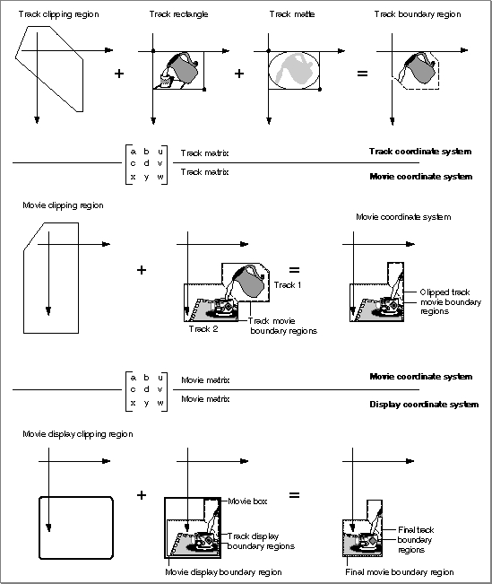
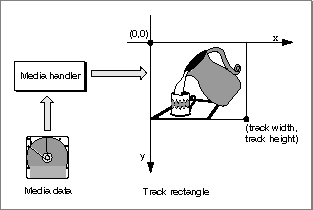
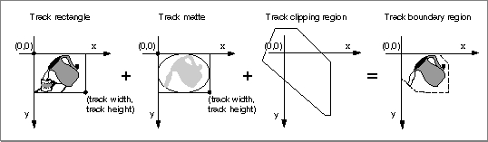
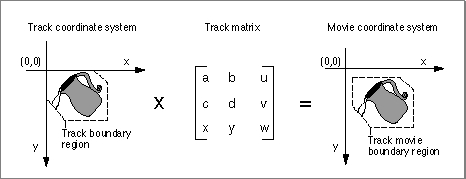
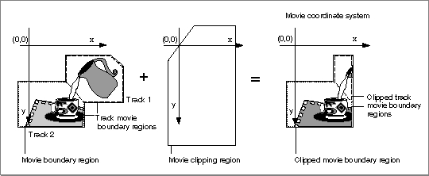
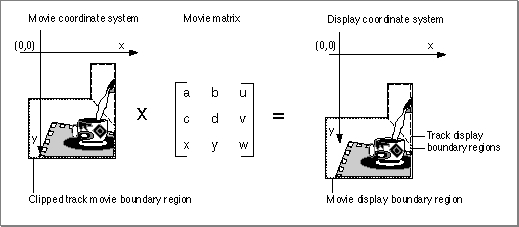
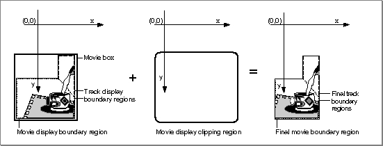

Spatial Properties
When you play a movie that contains visual data, the Movie Toolbox gathers the movie's data from the appropriate tracks and media structures, transforms the data as appropriate, and displays the results in a window. The Movie Toolbox uses only those tracks thatConsequently, the size, shape, and location of many of these regions may change during movie playback. This process is quite complicated and involves several phases of clipping and resizing.
- are not empty
- contain media structures that reference data at a specified time
- are enabled in the current movie mode (standard playback, poster mode, or preview mode)
The Movie Toolbox shields you from the intricacies of this process by providing two high-level functions,
GetMovieBoxandSetMovieBox(described on page 2-147 and page 2-146, respectively), which allow you to place a movie box at a specific location in the display coordinate system. When you use these functions, the Movie Toolbox automatically adjusts the contents of the movie's matrix to satisfy your request.Figure 2-12 provides an overview of the entire process of gathering, transforming, and displaying visual data. Each track defines its own spatial characteristics, which are then interpreted within the context of the movie's spatial characteristics.
This section describes the process that the Movie Toolbox uses to display a movie. The process begins with the movie data and ends with the final movie display. The phases, which are described in detail in this section, include
- the creation of a track rectangle (see Figure 2-13 on page 2-16)
- the clipping of a track's image (see Figure 2-14 on page 2-17)
- the transformation of a track into the movie coordinate system (see Figure 2-15 on page 2-17)
- the clipping of a movie image (see Figure 2-16 on page 2-17)
- the transformation of a movie into the display coordinate system (see Figure 2-17 on page 2-18)
- the clipping of a movie for final display (see Figure 2-18 on page 2-18)
Figure 2-12 Spatial processing of a movie and its tracks
- Note
- Throughout this book and in Inside Macintosh: QuickTime Components, the term time coordinate system denotes QuickTime's time-based system. All other instances of the term coordinate system refer to QuickDraw's graphic coordinates.

Each track defines a rectangle into which its media is displayed. This rectangle is referred to as the track rectangle, and it is defined by the track width and track height values assigned to the track. The upper-left corner of this rectangle defines the origin point of the track's coordinate system.
The media handler associated with the track's media is responsible for displaying an image into this rectangle. This process is shown in Figure 2-13.
- Note
- Henceforth, the graphic coordinate system for a track is referred to simply as its coordinate system.

The Movie Toolbox next mattes the image in the track rectangle by applying the track matte and the track clipping region. This does not affect the shape of the image--only the display. Both the track matte and the track clipping region are optional.
A track matte provides a mechanism for mixing images. Mattes contain several bits per pixel and are defined in the track's coordinate system. The matte can be used to perform a deep-mask operation on the image in the track rectangle. The Movie Toolbox displays the weighted average of the track and its destination based on the corresponding pixel value in the matte.
The track clipping region is a QuickDraw region that defines a portion of the track rectangle to retain. The track clipping region is defined in the track's coordinate system. This clipping operation creates the track boundary region, which is the intersection of the track rectangle and the track clipping region.
This process and its results are shown in Figure 2-14.
Figure 2-14 Clipping a track's image

After clipping and matting the track's image, the Movie Toolbox transforms the resulting image into the movie's coordinate system. The Movie Toolbox uses a 3-by-3 transformation matrix to accomplish this operation (see the next section,
"The Transformation Matrix," for a complete discussion of matrix operations in the Movie Toolbox). The image inside the track boundary region is transformed by
the track's matrix into the movie coordinate system. The resulting area is bounded by the track movie boundary region. Figure 2-15 shows the results of this transformation operation.Figure 2-15 A track transformed into a movie coordinate system

The Movie Toolbox performs this portion of the process for each track in the movie. Once all of the movie's tracks have been processed, the Movie Toolbox proceeds to transform the complete movie image for display.
The union of all track movie boundary regions for a movie defines the movie's movie boundary region. The Movie Toolbox combines a movie's tracks into this single region where layers are applied. Therefore, tracks in back layers may be partially or completely obscured by tracks in front layers. The Movie Toolbox clips this region to obtain the clipped movie boundary region. The movie's movie clipping region defines the portion of the movie boundary region that is to be used. Figure 2-16 shows the process by which a movie is clipped and the resulting clipped movie boundary region.
Figure 2-16 Clipping a movie's image

After clipping the movie's image, the Movie Toolbox transforms the resulting image into the display coordinate system. The Movie Toolbox uses a 3-by-3 transformation matrix to accomplish this operation (see the next section, "The Transformation Matrix," for a complete discussion of matrix operations in the Movie Toolbox). The image inside the clipped movie boundary region is transformed by the movie's matrix into the display coordinate system. The resulting area is bounded by the movie display boundary region. Figure 2-17 shows the results of this step.
Figure 2-17 A movie transformed to the display coordinate system

The rectangle that encloses the movie display boundary region is called the movie box, as shown in Figure 2-18. You can control the location of a movie's movie box by adjusting the movie's transformation matrix.
Figure 2-18 Clipping a movie for final display

Once the movie is in the display coordinate system (that is, the QuickDraw graphics world), the Movie Toolbox performs a final clipping operation to generate the image that is displayed. The movie is clipped with the movie display clipping region. When a movie is displayed, the Movie Toolbox ignores the graphics port's clipping region--this is why there is a movie display clipping region. Figure 2-18 shows this operation.